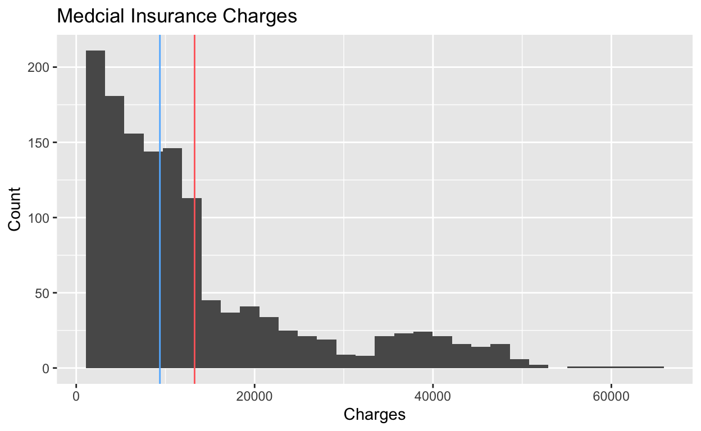
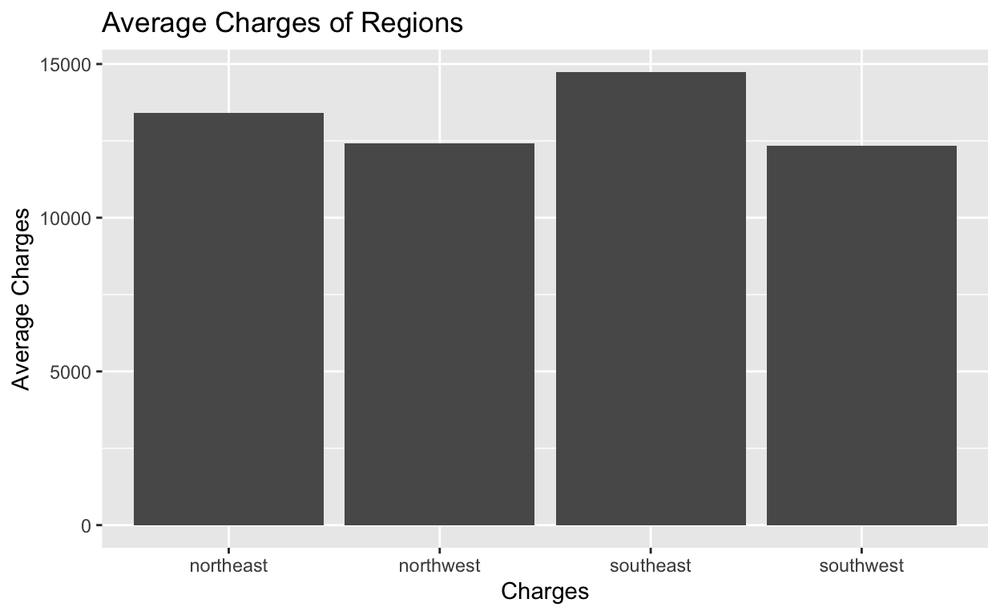
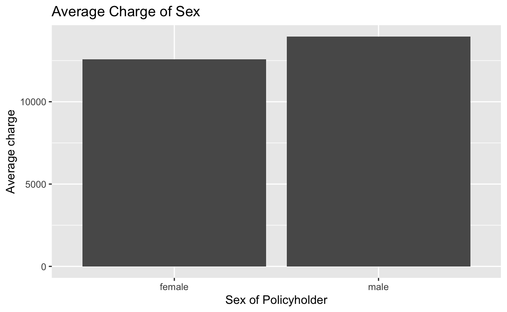

My final project
##Introdcution The area of medical insurance charges is a complex landscape influenced by many factors encompassing personal attributes and geographic nuances. This study endeavors to unravel the intricate relationships between age, gender, BMI (Body Mass Index), number of children, smoking habits, and regional disparities in the context of medical insurance charges. The overarching question guiding this investigation is whether certain personal attributes and geographic factors contribute to systematic patterns in insurance costs, illuminating the underlying dynamics within the healthcare system. The hypothesis suggests that specific personal attributes, such as smoking habits, higher BMI, and an increased number of dependents, may be associated with increased medical insurance charges. Additionally, regional differences are anticipated to alter as variations in healthcare expenses, reflecting the diverse healthcare infrastructures and policies. Age, being a fundamental variable, is expected to impact health conditions and insurance costs as individuals progress through different life stages. Gender, as a distinct variable, provides a lens to scrutinize potential disparities and unique healthcare requirements. BMI, serving as a numeric indicator of overall health, is presumed to unveil connections between body composition and insurance charges, with higher BMI potentially signaling increased health risks. The number of children, as a measure of dependents, is hypothesized to contribute to higher insurance charges. Lastly, smoking habits, denoted by a binary variable, are anticipated to correlate with elevated health expenses due to associated health risks. The regional variable is crucial in discerning geographical differences in healthcare costs, accessibility, and policies that may manifest as distinct patterns in insurance charges. The importance of this exploration is significant as it not only seeks to validate or refute existing assumptions about the predictors of insurance models.
##Data
The data for this study are sourced from a comprehensive data set encompassing key variables such as age, gender, BMI, number of children, smoking habits, region, and medical insurance charges. These variables, collectively comprising the data set, show a diverse range of factors that may influence insurance costs. Age, a numeric variable, is measured in years, reflecting the progressive impact of aging on health conditions and insurance expenses. This data set encompasses each age fro 18 to 64. Gender, a categorical variable with binary values (male or female), is crucial for discerning potential disparities and unique healthcare requirements. BMI, derived from height and weight measurements, serves as a numeric indicator of overall health and potential health risks, impacting insurance charges. The number of children, representing dependents covered under an insurance policy, is a discrete variable integral to understanding familial influences on medical coverage. Smoking habits, denoted as a binary variable (1 for smokers, 0 for non-smokers), are indicative of potential health risks that might lead to higher medical expenses. Region, a categorical variable capturing geographic differences, offers insights into variations in healthcare cost, accessibility, and policies. My study adopts a cross-sectional research design because it aims to analyze the relationships between personal attributes, regional factors, and medical insurance charges at a specific point in time. The data collection involves a diverse set of variables such as age, gender, BMI, number of children, smoking habits, region, and medical insurance charges, all measured concurrently. The researchers are not following these individuals over time to observe changes but are instead capturing a momentary snapshot of the relationships among the variables.
library(tidyverse)
library(ggplot2)
insurance <- read_csv("insurance.csv")
charges_hist <- ggplot(data = insurance,
mapping = aes(x = charges)) +
geom_histogram() +
geom_vline(aes(xintercept = mean(charges)),color = "indianred1") +
geom_vline(aes(xintercept = median(charges)),color = "steelblue1") +
labs(x="Charges", y="Count", title = "Medcial Insurance Charges")
charges_hist
This histogram displays the distribution of medical charges. The x-axis represents charges and the y-axis represents the count of charges at each price. I included a mean line and a median line inside of this plot. The mean line provides us with the average of all charges. The median provides us simply with the middle value of the entire charges count. The mean and median are roughly close together so this would assume the distribution of charges is roughly balanced towards zero. The majority of charges are closer to the beginning of the charges so the distribution would be skewed right.
##Results
region_hist <- insurance |>
group_by(region) |>
summarize(
avg_region_chargees = mean(charges)
) |>
ggplot(mapping = aes(x = region, y = avg_region_chargees)) +
geom_col() +
labs(x = "Charges" ,y = "Average Charges", title = "Average Charges of Regions")
region_hist
sex_box <- insurance |>
group_by(sex) |>
summarize(avg_sex_charges = mean(charges)) |>
ggplot(mapping = aes(x = sex, y = avg_sex_charges)) +
geom_col() +
labs(x = "Sex of Policyholder", y = "Average charge", title = "Average Charge of Sex ")
sex_box
I decided to use two histograms to visualize and interpret the only two non-numeric variables within my data set: Sex and Regions. As these two variables are a little bit more vague and not as discrete as the other two variables used they would still make a significant impact upon my study. These two variables would take much research to understand the significance behind them. For one to understand why a specific region pays more health insurance than others would need a deep dive into many different sections. Regions may vary in quality and availability between rural and more urban areas. Higher cost of living between areas could play an important role. Policies between regional and state levels may have many variations between coverage or requirements. On the side of sex, many different factors take place when considering overarching medical insurance. Woman may take many more office visits simply on the cause of maternity care and childbirth. Certain health conditions might be more prevalent in one gender and insurance plans definitely will take this into account. Life expectancy can surely impact insurance calculations. Even though these two variables take much outside consideration, i still find it important to include both into account.
Based off of the Region charges histogram, the southeast region pays the most insurance charges. Even though this are pays the most the discrepancy between the lowest, southwest region isnt very much. There is only about a 2,500 difference which isnt absurd when talking insurance plans. This data set seems to show that region doesnt have a very significant impact on insurance charges. All the numeric value variables have a much greater affect. When looking at the difference of male and females, we also dont see an alarming difference between the two. The difference is about $1,500 I did expect the female charges to be much higher.
library(modelsummary)
fit_1 <- lm(formula = charges ~ bmi + age + children, data = insurance)
modelsummary::modelsummary(fit_1,
gof_map = c("nobs", "r.squared", "adj.r.squared"))| (1) | |
|---|---|
| (Intercept) | 6916.243 |
| (1757.480) | |
| bmi | 332.083 |
| (51.310) | |
| age | 239.994 |
| (22.289) | |
| children | 542.865 |
| (258.241) | |
| Num.Obs. | 1338 |
| R2 | 0.120 |
| R2 Adj. | 0.118 |
This table displays a linear regression model of my dataset using the variables bmi, age, and children. These are my main numeric variables so understanding how they interact on a linear level is very important. To understand the model I have to interpret each coefficient. The intercept is -6916.2. This would be used to show the estimated value of the charges if all independent variables(bmi, age, children) are at zero. In this context this value isnt very helpful or necessary as ones insurance from this data set or life wouldnt be in the negatives. A BMI at zero is very unrealistic and nobody in this data set at zero years of age has medical insurance charges. This variable does however show that the lesser each variable is, the less ones medical insurance charges would be. The rest of the coefficients outline that one unit increase makes the charges variable increase or decrease. Each one of these calculations is done independently, holding the other two independent variables constant. For each one unit BMI, the model predicts an increase of $332.1 in charges. This suggests clearly that a higher BMI is associated with higher medial cost. For one age year increase, the model predicts an increase of $240.00. This implies as individuals get older, the model predicts higher medical charges. Lastly for each child covered by the insurance policy , the model predicts an increase of $5242.9 in charges. This suggest that having more dependents under ones name on an insurance policy would increase their medical charges significantly. This table is very useful in association to my exploration and hypothesis. However we should use it with caution as it covers numeric variables not withing the data such as BMI and Age being way lower than a realistic value.
##Conclusion In conclusion, the study searched to understand the intricate relationships between personal attributes and regional factors, seeking to understand their impact on medical insurance charges. The analysis revealed findings that align with the initial hypothesis. Notably, smoking habits, higher BMI, and an increased number of dependents were associated with higher medical insurance charges, providing support for the hypothesis. The regional variable, while showing variations, did not exhibit a significant impact on insurance charges compared to the numeric variables. The histogram visualizations illustrated the distribution of charges, with the southeast region displaying the highest average charges. However, the differences between regions were relatively small. Exploring gender differences also revealed a moderate disparity, with males having slightly higher insurance charges. The linear regression model further confirmed the impact of BMI, age, and number of children on insurance charges, providing numeric insights into the relationships. Despite these findings, limitations in the analysis should be acknowledged. The data set did not include certain potentially influential factors, such as specific health conditions, which could introduce confounding. Additionally, the cross-sectional design limits the ability to establish causation. With more time and resources, a longitudinal study incorporating a more comprehensive set of variables and accounting for confounders could enhance the depth and accuracy of the analysis.